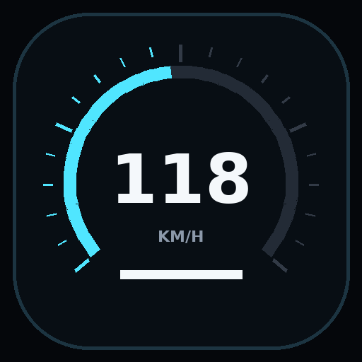
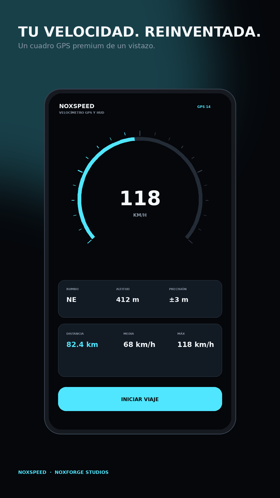

HUD real
Interfaz horizontal de alto contraste con inversión en espejo para reflejar la velocidad en el parabrisas.

NoxForge StudiosGPS Speedometer · Head-Up Display
Tu velocidad, reinventada. Velocímetro GPS fluido, HUD reflejado para parabrisas, ordenador de viaje, estadísticas y diseños personalizables en una interfaz creada para la carretera.

Interfaz horizontal de alto contraste con inversión en espejo para reflejar la velocidad en el parabrisas.
Distancia, duración, velocidad media y máxima, altitud y estadísticas guardadas localmente.
Temas y personalización avanzada sin publicidad intrusiva durante la conducción.